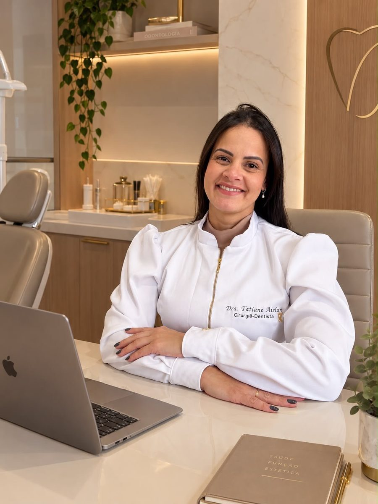
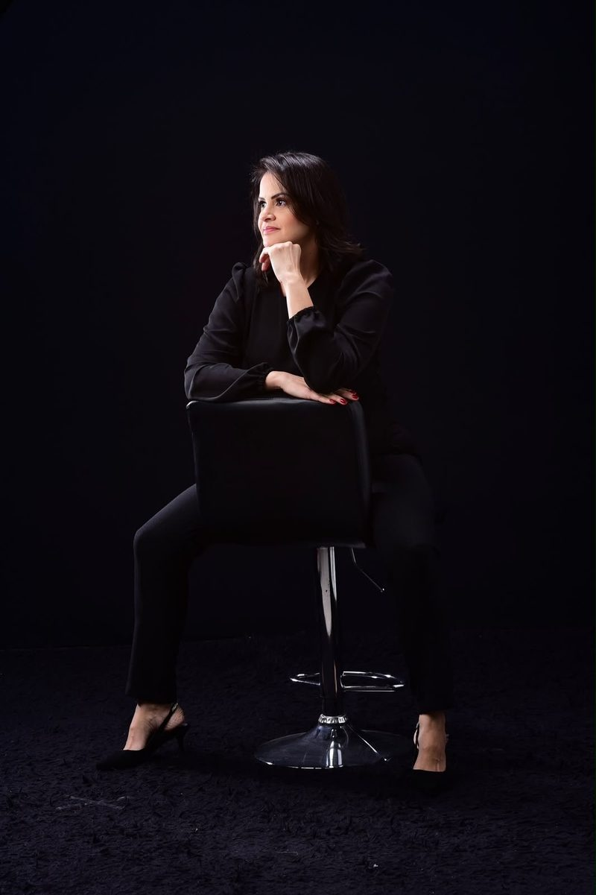
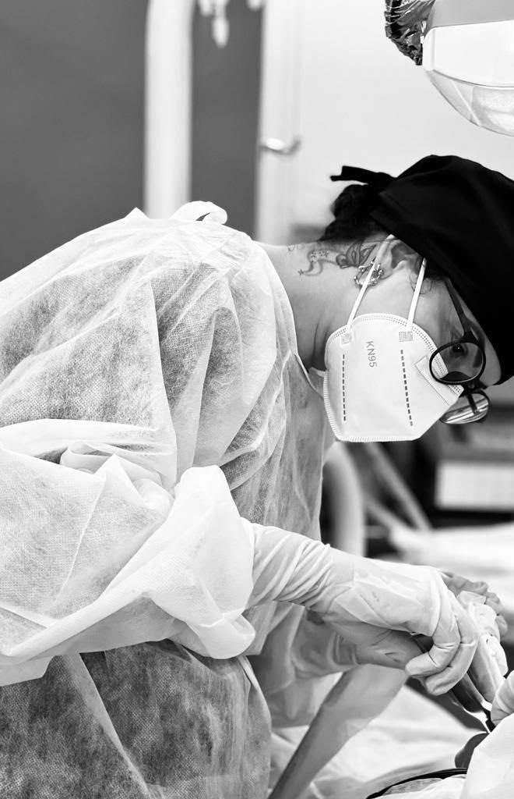

Reabilitação oral
Planejamento integrado para devolver função mastigatória, conforto e estética quando há perda de dentes, desgastes ou fraturas. Pode reunir diferentes procedimentos, em etapas bem definidas.
Odontologia com técnica, cuidado e escuta, para devolver saúde, função e confiança ao seu sorriso.
CRO-BA 32044


Cirurgiã-dentista formada pela UNIME, União Metropolitana de Educação e Cultura, a Dra. Tatiane Aislan dedica sua prática à odontologia clínica e cirúrgica, com atuação em cirurgias odontológicas, extrações, restaurações e implantes dentários.
Seu atendimento parte de uma convicção simples: cada sorriso carrega uma história. Por isso, cada tratamento começa com escuta atenta, avaliação criteriosa e um plano explicado com clareza, para que o paciente participe de cada decisão.
Na reabilitação oral, o objetivo vai além da aparência: devolver a função mastigatória, o conforto e a confiança, com soluções planejadas de forma individual e baseadas em evidência científica.
Cada procedimento é indicado após avaliação clínica e, quando necessário, exames de imagem. O plano é sempre individual.
Planejamento integrado para devolver função mastigatória, conforto e estética quando há perda de dentes, desgastes ou fraturas. Pode reunir diferentes procedimentos, em etapas bem definidas.
Substituição da raiz de um dente perdido por um implante integrado ao osso, sobre o qual é instalada a prótese. Uma solução estável e duradoura quando bem indicada e mantida.
Procedimentos cirúrgicos na boca realizados com planejamento, anestesia local e protocolos de biossegurança, com orientações claras para o pré e o pós-operatório.
Remoção de dentes quando há indicação clínica, incluindo dentes do siso. A decisão considera exame clínico, radiografias e os riscos de cada caso.
Tratamento de dentes afetados por cárie, fraturas ou desgastes, devolvendo forma, função e aparência natural com materiais adequados a cada situação.
Consulta com escuta da sua história, exame de dentes, gengiva e mucosas, orientações de higiene e explicação das opções de tratamento.
Conversamos sobre sua história, queixas, saúde geral e expectativas.
Exame clínico e, quando necessário, solicitação de exames de imagem.
As opções são explicadas com clareza, com etapas e cuidados. A decisão é compartilhada.

Antes de qualquer procedimento, são avaliados a saúde geral, os medicamentos em uso e os exames necessários. Durante o atendimento, biossegurança e atenção aos detalhes são inegociáveis.
É esse cuidado, muitas vezes invisível, que torna o tratamento mais seguro e previsível.
Fale diretamente pelo WhatsApp e tire suas dúvidas sobre consultas e procedimentos.
WhatsApp: (71) 99220-6132